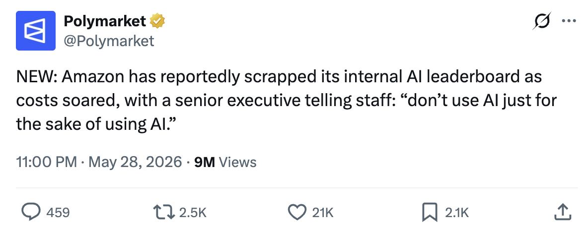
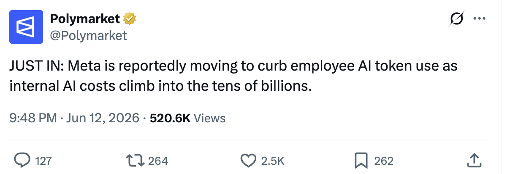
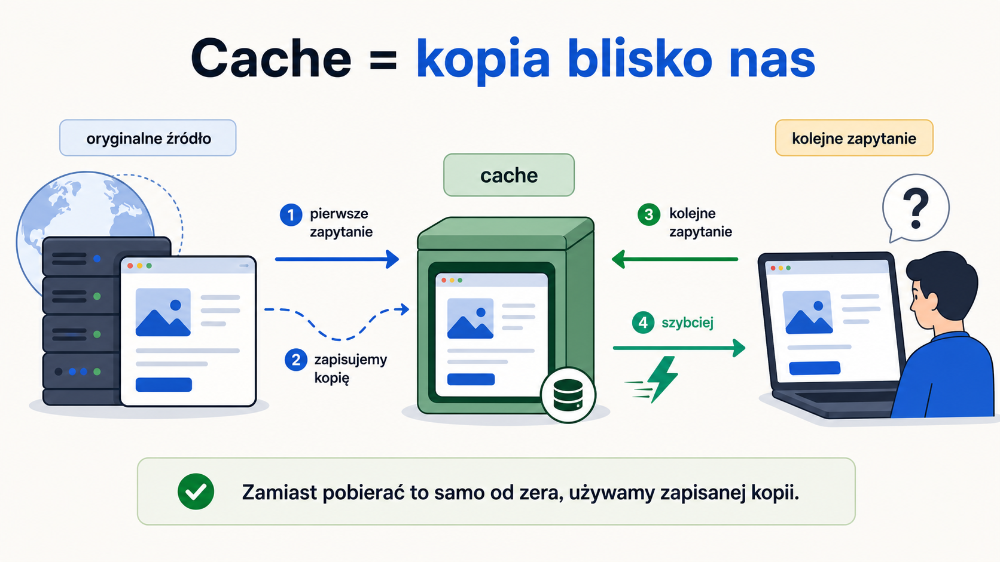
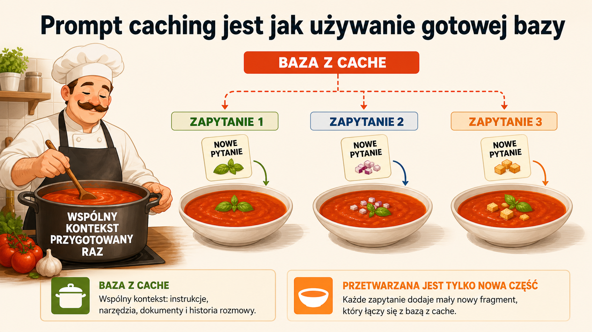
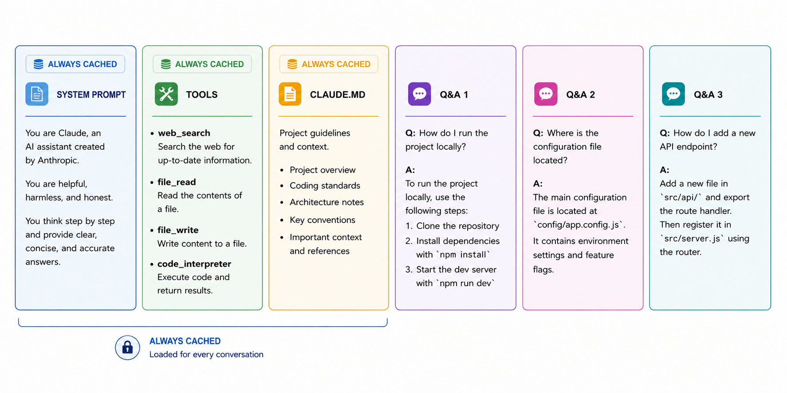

GPT-5.5
input
$2.50
cache
$0.25
za 1M tokenów


za 1M tokenów
za 1M tokenów
Sprawdzone 13 czerwca 2026 · źródła: OpenAI API pricing, Anthropic Claude pricing




Z drugiej strony...
Praktyczna zasada: Codex i Claude Code najlepiej działają, gdy kontekst jest zajęty poniżej 50%.
Wstęp do demo
Dobra strategia: małe zadania, osobne zakresy, jasny merge na końcu.
Harness udostępnia narzędzia
{
"name": "spawn_agent",
"description": "Spawn a sub-agent for a well-scoped task.",
"parameters": {
"agent_type": "worker",
"message": "Implement the assigned workflow slice.",
"fork_context": false
}
}Gdy niezależna opinia jest warta nowego kontekstu
Świeży kontekst nie jest przywiązany do kodu, więc łatwiej kwestionuje założenia.
Tańszy model może przeskanować repozytorium i zwrócić krótką mapę przed drogą pracą głównego agenta.
Przy incydentach, ryzykownych decyzjach albo pracy widocznej dla zarządu warto zapytać więcej niż jeden model.